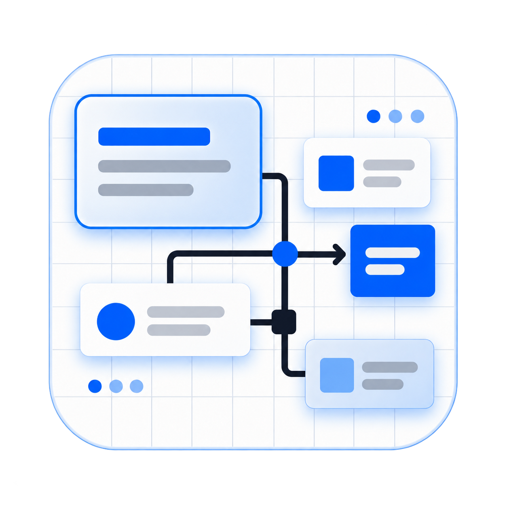
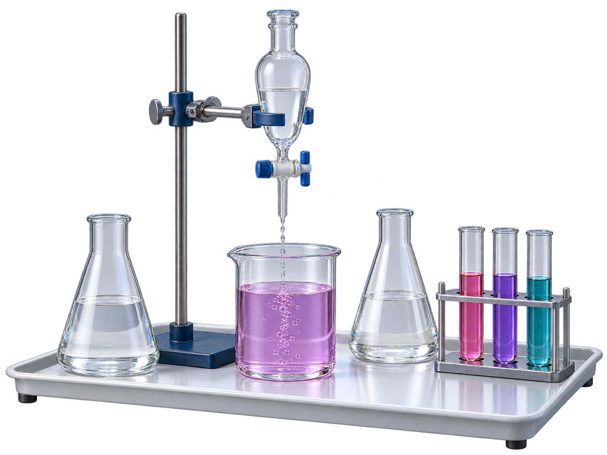

Floating Whiteboard
A little sketch. A clearer idea.
Your ideas, in motion.
Draw naturally. Explain visually. Bring lessons to life.
PEN + TOUCHOFFLINE FIRSTWINDOWS x64

COLOUR · REACTION · DISCOVERY

